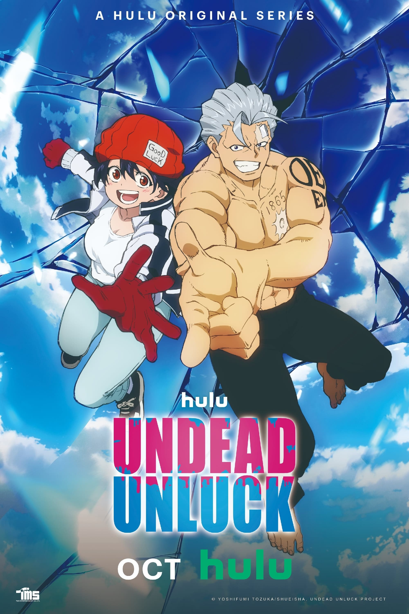
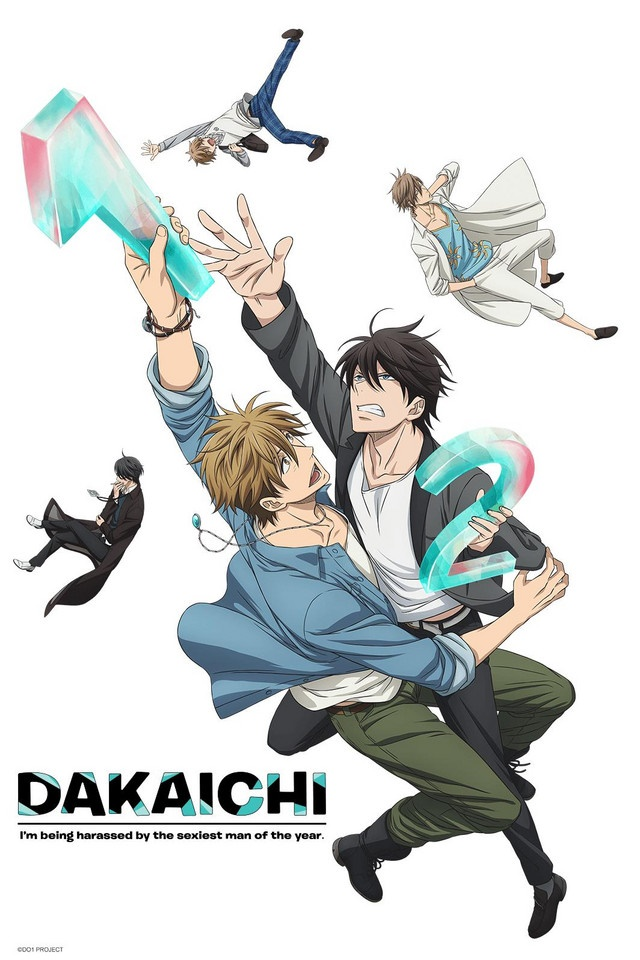

- undead unluck
- +16
- Após concluir seu mangá favorito, Fuuko Izumo, afligida por causar má sorte a quem toca nela,
decide se suicidar. No momento crítico, um estranho chamado Andy, que também deseja a morte,
a toca, mas ele é imortal. Juntos, buscam uma morte digna, porém uma organização misteriosa quer
explorar suas habilidades. Morte e imortalidade entrelaçam suas vidas.
-
